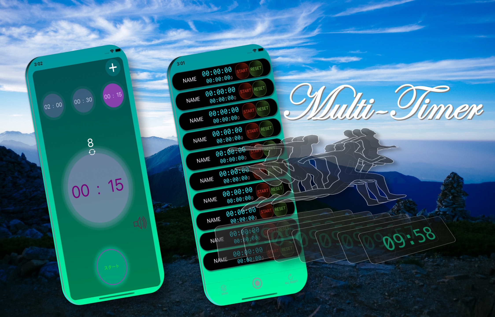
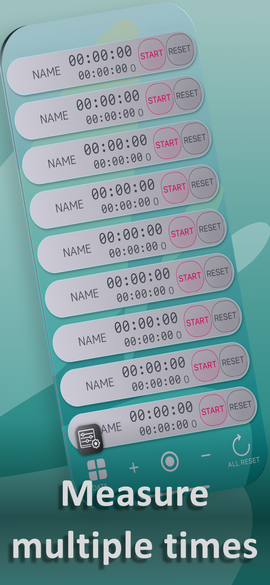
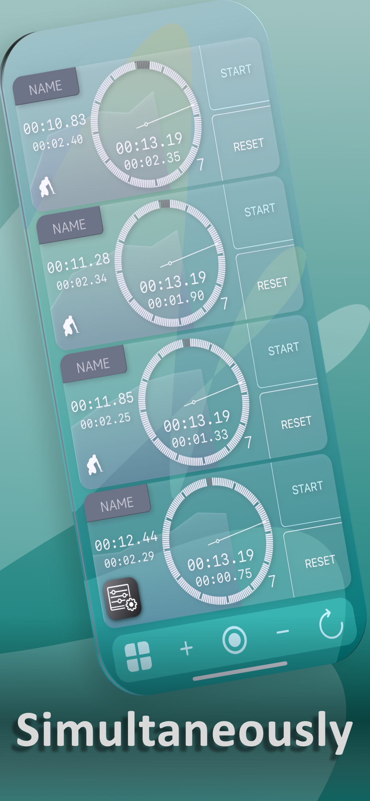
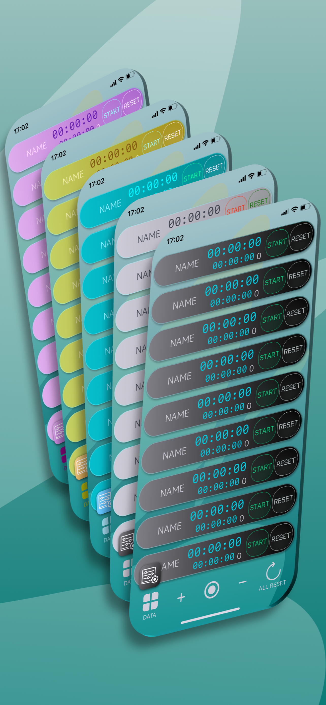
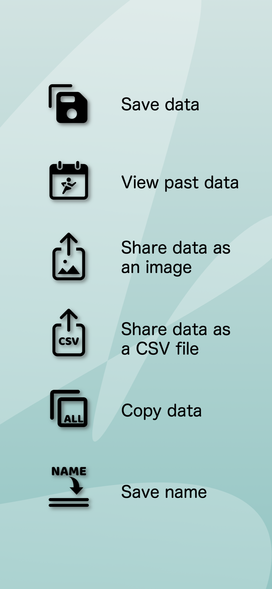

Coaches and team managers
Time several athletes in track or swimming. Identify each stopwatch by name and color, and group them to start or record laps together.
Multiple stopwatches for coaches & team managers
Time multiple athletes at once on one iPhone or iPad. Multi-Timer helps coaches and team managers record laps and splits, then save and share training results. It also includes countdowns for studying and cooking, plus work and rest intervals for HIIT.
158,000+ downloadsas of September 20, 2026
Download on the App StoreAll basic features are free. Photo finish, Online Timer, and NoLook Timer are each available through a one-time purchase for continued use, or temporarily by watching an ad. Ad removal is a separate one-time purchase.

What is Multi-Timer?
Who it’s for
Built especially for coaches and team managers timing several athletes on their own. Choose a mode for team practice, work and rest intervals, or several everyday tasks.
Time several athletes in track or swimming. Identify each stopwatch by name and color, and group them to start or record laps together.
Record laps and splits to review training sessions or races. Save results and revisit them in the calendar.
Combine work and rest intervals for HIIT, Tabata, or circuit training.
Record lap times and label competitors or vehicles separately. Share results as CSV files or images.
Divide study time into sessions or manage several dishes at once. Give each daily timer its own name, color, alarm sound, and repeat setting.
Manage player time allowances or measure several tasks and process steps. Name each measurement to keep activities separate.
Reported uses include athletics, swimming, keirin, car and motorboat races, games, and workplace tasks. Multi-Timer is also widely deployed on organization-managed devices using MDM.
Stopwatch features
Use START, STOP, LAP, and RESET for each stopwatch. Group stopwatches to start, stop, or record laps together.
A lap measures one segment; a split measures the total time since the start. Record both to review each athlete’s pace and passing times.
Change each stopwatch’s name and color, and choose how many appear on screen. Rearrange them manually or sort automatically by rank.
Open DATA and save with a title, then revisit past records in the calendar. You can also edit recorded times afterward.
Share results as CSV files or images, or copy them for organization and analysis in Excel or Google Sheets.
Enable volume button controls in settings to start or stop stopwatches in sequence with the volume down button.
Choose a timing mode
Swipe horizontally to switch modes. Access options and sound or notification behavior depend on the mode you choose.
Free basic feature
Time several athletes on one screen and record laps and splits. Group controls, saved results, and sharing help you manage team training records.
One-time purchase / Temporary access by watching an ad
Share a room ID to link stopwatches on different devices. Useful when the start and finish are far apart or several people help with timing. A stable internet connection is required.
One-time purchase / Temporary access by watching an ad
Tap as athletes pass, then assign marks to athletes or adjust times afterward. Laps are calculated automatically. The volume down button can also start timing or record a lap.
One-time purchase / Temporary access by watching an ad
Link the stopwatch to video playback. Use slow motion, fast-forward, and pause to inspect finishes or swimming touches, then manually record times for each athlete.
Free basic feature
Run separate countdowns for cooking or studying, with names, colors, sounds, and repeat settings. On iOS 26 or later, allow alarms to hear alerts while locked, in Silent mode, or in Focus. With regular notifications, sound depends on notification settings.
Free basic feature
Combine work and rest intervals and repeat a sequence up to 9,999 times. Save your menu for reuse. Keep the app open to follow changes and hear alerts: this mode does not support background sounds or notifications.
How to use Multi-Timer
Swipe horizontally to choose a mode. Name and color your stopwatches, and group them when needed.
Tap START to begin, LAP to record passing times, and STOP to finish. Use RESET when preparing a new measurement.
Open DATA, choose the save action, and enter a title. Revisit records in the calendar, share a CSV file or image, or copy the results.
APP SCREENS




Features, purchases, and alerts explained
Multi-Timer is an iPhone and iPad app for operating several stopwatches or timers on one device. It is especially useful for coaches and team managers timing multiple athletes. Runners, swimmers, cyclists, PE teachers, fitness trainers, students, and cooks can also use its timing modes.
You can run 20+ stopwatches at once, depending on your device, and adjust how many appear on screen. The same number is not guaranteed on every device.
A lap is the time for one segment. A split is the total elapsed time from the start. Multi-Timer can record both.
Yes. Each stopwatch has individual start, stop, and reset controls. You can also group stopwatches to start, stop, or record laps together.
Yes. Open DATA, choose the save action, and enter a title to revisit results in the calendar. You can edit times, share CSV files or images, and copy results for organization and analysis in Excel or Google Sheets.
Online Timer links stopwatches on different devices through a shared room ID. It is useful when the start and finish are far apart or several people help with timing. A stable internet connection is required. Online Timer is available as a separate one-time in-app purchase for continued use, or temporarily by watching an ad.
NoLook Timer lets you tap as athletes pass and assign marks to athletes afterward. You can adjust times, and laps are calculated automatically. The volume down button can also start timing or record a lap. NoLook Timer is available as a separate one-time in-app purchase for continued use, or temporarily by watching an ad.
Photo finish links the stopwatch to video playback. Use slow motion, fast-forward, and pause to inspect finishes or swimming touches, then manually record times for each athlete. Photo finish is available as a separate one-time in-app purchase for continued use, or temporarily by watching an ad.
On iOS 26 or later, Timer For Daily Use can sound while another app is open or the screen is locked when you allow alarms, including in Silent mode or Focus. When regular notifications are used, sound behavior depends on notification settings.
Timer For Training does not support background sounds or notifications. Keep the app open to follow work and rest changes and hear alerts. You can repeat a sequence up to 9,999 times and save it for reuse. Toggle audio with the sound button and change vibration in Settings.
All basic features are free. Photo finish, Online Timer, and NoLook Timer are each one-time in-app purchases for continued use. You can also use these features temporarily by watching an ad without purchasing them. Ad removal is a separate one-time purchase. Check the App Store or the in-app purchase screen for current prices.
Yes. Multi-Timer is for iPhone and iPad and supports iPad multitasking. Check the App Store for current operating system and device requirements.
Yes. In addition to cooking and study countdowns, reported uses include game time allowances and multiple workplace tasks. It is also used in keirin, car and motorboat races, and is widely deployed on organization-managed devices using MDM.
DEVELOPER
Independent iOS developer, medical doctor, and runner. Multi-Timer was created from the need for a practical tool that can keep up with real training sessions.
Start timing several activities with the free basic features.
View Multi-Timer on the App StorePage updated: